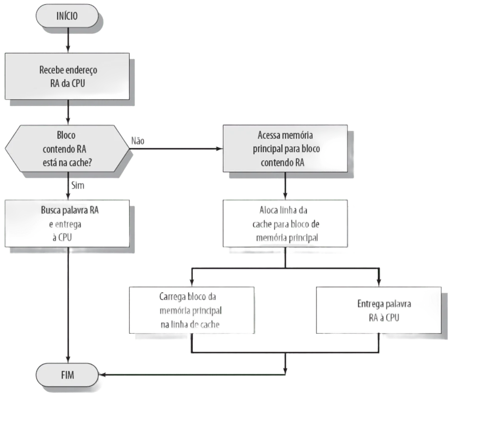
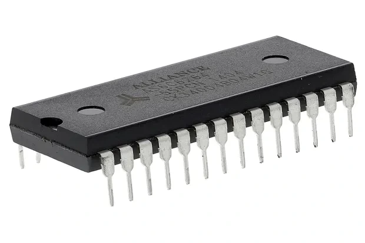
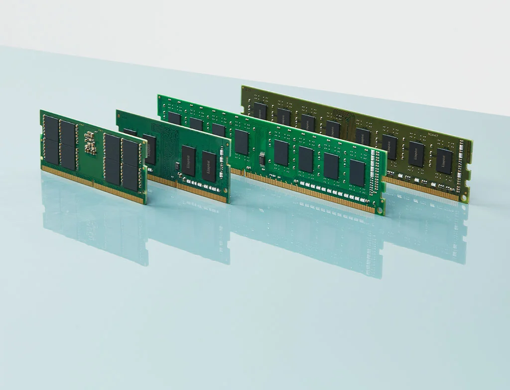
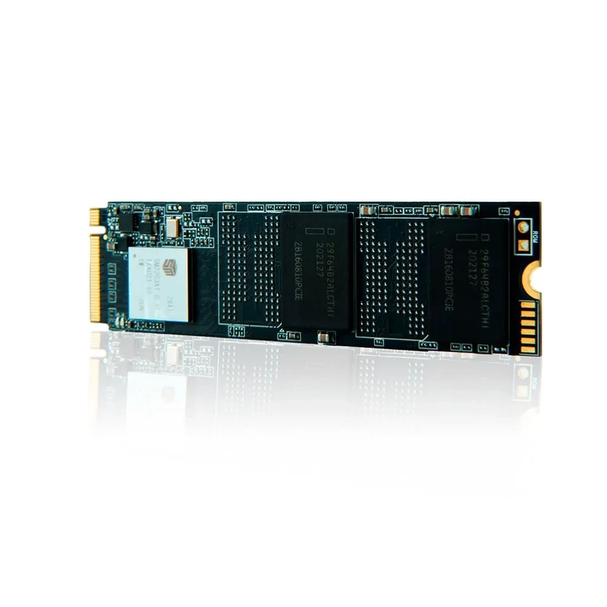
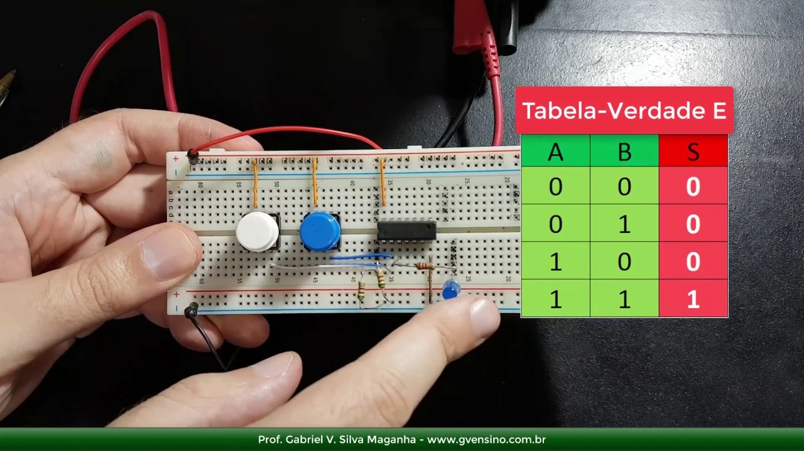
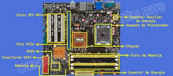

Níveis do Armazenamento
A estrutura física otimiza o acesso aos dados. Ela também reduz gastos estruturais nos computadores. Essa arquitetura usa princípios espaciais e temporais. O objetivo central envolve fornecer velocidade elevada. Ao mesmo tempo, busca manter ampla capacidade. Para isso, utiliza opções mais econômicas disponíveis.
Durante os processos, software e hardware trabalham juntos. Eles gerenciam as transferências entre os diferentes níveis. Essa divisão inclui partes voláteis e não-voláteis. O desempenho geral computacional depende muito dessa organização física.

Função dos Registradores e Cache
No topo estrutural ficam os registradores. Eles operam na mesma frequência processadora. Estes circuitos retêm operandos imediatamente necessários. A Unidade Lógica utiliza essas variáveis rapidamente. O acesso ocorre em nanossegundos.
Logo abaixo, a Cache atua como buffer temporário ultraveloz. Sua função principal envolve reduzir atrasos. Ela agiliza o acesso à placa principal. O tráfego informacional evita ciclos ociosos na CPU. Camadas L1, L2 e L3 possuem tamanhos distintos. Elas entregam respostas específicas para cada núcleo processador.
Abaixo da Cache, encontramos a RAM. Ela retém programas em plena execução. Na base estrutural, situam-se discos rígidos magnéticos. Unidades SSD também compõem essa base. Eles oferecem ampla retenção permanente. O custo por byte cai bastante. No entanto, possuem maior latência na leitura.

Voltar ao topo
Galeria dos Componentes Físicos




Voltar ao topo
Envie suas Dúvidas

Voltar ao topo
Mural do Laboratório





Voltar ao topo